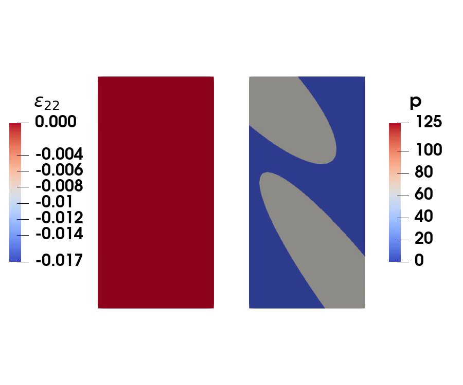
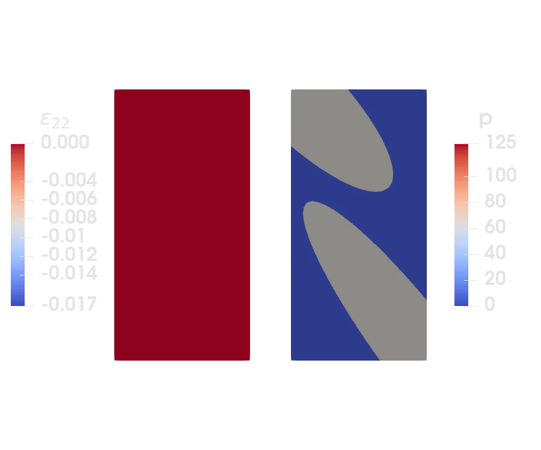

Porous media
Porous media is a two-phase material, consisting of solid parts and a liquid occupying the pores in between. Using the porous media theory, we can model such a material without explicitly resolving the microstructure, but by considering the interactions between the solid and liquid. In this example, we will additionally consider larger linear elastic solid aggregates that are impermeable. Hence, there is no liquid in these particles and the only unknown variable is the displacement field :u. In the porous media, denoted the matrix, we have both the displacement field, :u, as well as the liquid pressure, :p, as unknown. The simulation results, the vertical strain (defined on the whole domain) and the liquid pressure (only defined in the porous matrix), are shown below


Theory of porous media
The strong forms are given as
\[\begin{aligned} \boldsymbol{\sigma}(\boldsymbol{\epsilon}, p) \cdot \boldsymbol{\nabla} &= \boldsymbol{0} \\ \dot{\Phi}(\boldsymbol{\epsilon}, p) + \boldsymbol{w}(p) \cdot \boldsymbol{\nabla} &= 0 \end{aligned}\]
where $\boldsymbol{\epsilon} = \left[\boldsymbol{u}\otimes\boldsymbol{\nabla}\right]^\mathrm{sym}$ The constitutive relationships are
\[\begin{aligned} \boldsymbol{\sigma} &= \boldsymbol{\mathsf{C}}:\boldsymbol{\epsilon} - \alpha p \boldsymbol{I} \\ \boldsymbol{w} &= - k \boldsymbol{\nabla} p \\ \Phi &= \phi + \alpha \mathrm{tr}(\boldsymbol{\epsilon}) + \beta p \end{aligned}\]
with $\boldsymbol{\mathsf{C}}=2G \boldsymbol{\mathsf{I}}^\mathrm{dev} + K \boldsymbol{I}\otimes\boldsymbol{I}$. The material parameters are then the shear modulus, $G$, bulk modulus, $K$, permeability, $k$, Biot's coefficient, $\alpha$, and liquid compressibility, $\beta$. The porosity, $\phi$, doesn't enter into the equations (A different porosity leads to different skeleton stiffness and permeability).
The variational (weak) form can then be derived for the variations $\boldsymbol{\delta u}$ and $\delta p$ as
\[\begin{aligned} \int_\Omega \left[\left[\boldsymbol{\delta u}\otimes\boldsymbol{\nabla}\right]^\mathrm{sym}: \boldsymbol{\mathsf{C}}:\boldsymbol{\epsilon} - \boldsymbol{\delta u} \cdot \boldsymbol{\nabla} \alpha p\right] \mathrm{d}\Omega &= \int_\Gamma \boldsymbol{\delta u} \cdot \boldsymbol{t} \mathrm{d} \Gamma \\ \int_\Omega \left[\delta p \left[\alpha \dot{\boldsymbol{u}} \cdot \boldsymbol{\nabla} + \beta \dot{p}\right] + \boldsymbol{\nabla}(\delta p) \cdot [k \boldsymbol{\nabla}(p)]\right] \mathrm{d}\Omega &= \int_\Gamma \delta p w_\mathrm{n} \mathrm{d} \Gamma \end{aligned}\]
where $\boldsymbol{t}=\boldsymbol{n}\cdot\boldsymbol{\sigma}$ is the traction and $w_\mathrm{n} = \boldsymbol{n}\cdot\boldsymbol{w}$ is the normal flux.
Finite element form
Discretizing in space using finite elements, we obtain the vector equation $r_i = f_i^\mathrm{int} - f_{i}^\mathrm{ext}$ where $f^\mathrm{ext}$ are the external "forces", and $f_i^\mathrm{int}$ are the internal "forces". We split this into the displacement part $r_i^\mathrm{u} = f_i^\mathrm{int,u} - f_{i}^\mathrm{ext,u}$ and pressure part $r_i^\mathrm{p} = f_i^\mathrm{int,p} - f_{i}^\mathrm{ext,p}$ to obtain the discretized equation system
\[\begin{aligned} f_i^\mathrm{int,u} &= \int_\Omega [\boldsymbol{\delta N}^\mathrm{u}_i\otimes\boldsymbol{\nabla}]^\mathrm{sym} : \boldsymbol{\mathsf{C}} : [\boldsymbol{u}\otimes\boldsymbol{\nabla}]^\mathrm{sym} \ - [\boldsymbol{\delta N}^\mathrm{u}_i \cdot \boldsymbol{\nabla}] \alpha p \mathrm{d}\Omega &= \int_\Gamma \boldsymbol{\delta N}^\mathrm{u}_i \cdot \boldsymbol{t} \mathrm{d} \Gamma \\ f_i^\mathrm{int,p} &= \int_\Omega \delta N_i^\mathrm{p} [\alpha [\dot{\boldsymbol{u}}\cdot\boldsymbol{\nabla}] + \beta\dot{p}] + \boldsymbol{\nabla}(\delta N_i^\mathrm{p}) \cdot [k \boldsymbol{\nabla}(p)] \mathrm{d}\Omega &= \int_\Gamma \delta N_i^\mathrm{p} w_\mathrm{n} \mathrm{d} \Gamma \end{aligned}\]
Approximating the time-derivatives, $\dot{\boldsymbol{u}}\approx \left[\boldsymbol{u}-{}^n\boldsymbol{u}\right]/\Delta t$ and $\dot{p}\approx \left[p-{}^np\right]/\Delta t$, we can implement the finite element equations in the residual form $r_i(\boldsymbol{a}(t), t) = 0$ where the vector $\boldsymbol{a}$ contains all unknown displacements $u_i$ and pressures $p_i$.
The jacobian, $K_{ij} = \partial r_i/\partial a_j$, is then split into four parts,
\[\begin{aligned} K_{ij}^\mathrm{uu} &= \frac{\partial r_i^\mathrm{u}}{\partial u_j} = \int_\Omega [\boldsymbol{\delta N}^\mathrm{u}_i\otimes\boldsymbol{\nabla}]^\mathrm{sym} : \boldsymbol{\mathsf{C}} : [\boldsymbol{N}_j^\mathrm{u}\otimes\boldsymbol{\nabla}]^\mathrm{sym}\ \mathrm{d}\Omega \\ K_{ij}^\mathrm{up} &= \frac{\partial r_i^\mathrm{u}}{\partial p_j} = - \int_\Omega [\boldsymbol{\delta N}^\mathrm{u}_i \cdot \boldsymbol{\nabla}] \alpha N_j^\mathrm{p}\ \mathrm{d}\Omega \\ K_{ij}^\mathrm{pu} &= \frac{\partial r_i^\mathrm{p}}{\partial u_j} = \int_\Omega \delta N_i^\mathrm{p} \frac{\alpha}{\Delta t} [\boldsymbol{N}_j^\mathrm{u} \cdot\boldsymbol{\nabla}]\ \mathrm{d}\Omega\\ K_{ij}^\mathrm{pp} &= \frac{\partial r_i^\mathrm{p}}{\partial p_j} = \int_\Omega \delta N_i^\mathrm{p} \frac{N_j^\mathrm{p}}{\Delta t} + \boldsymbol{\nabla}(\delta N_i^\mathrm{p}) \cdot [k \boldsymbol{\nabla}(N_j^\mathrm{p})] \mathrm{d}\Omega \end{aligned}\]
We could assemble one stiffness matrix and one mass matrix, which would be constant, but for simplicity we only consider a single system matrix that depends on the time step, and assemble this for each step. The equations are still linear, so no iterations are required.
Implementation
We now solve the problem step by step. The full program with fewer comments is found in the final section
Required packages
using Ferrite, FerriteMeshParser, Tensors, VTKHDF, DownloadsElasticity
We start by defining the elastic material type, containing the elastic stiffness, for the linear elastic impermeable solid aggregates.
struct Elastic{T} C::SymmetricTensor{4, 2, T, 9}endfunction Elastic(; E = 20.0e3, ν = 0.3) G = E / 2(1 + ν) K = E / 3(1 - 2ν) I2 = one(SymmetricTensor{2, 2}) I4dev = minorsymmetric(otimesu(I2, I2)) - I2 ⊗ I2 / 3 return Elastic(2G * I4dev + K * I2 ⊗ I2)end;Next, we define the element routine for the solid aggregates, where we dispatch on the Elastic material struct. Note that the unused inputs here are used for the porous matrix below.
function element_routine!(Ke, re, material::Elastic, cv::CellValues, a, args...) n_basefuncs = getnbasefunctions(cv) for q_point in 1:getnquadpoints(cv) dΩ = getdetJdV(cv, q_point) ϵ = function_symmetric_gradient(cv, q_point, a) σ = material.C ⊡ ϵ for i in 1:n_basefuncs δ∇N = shape_symmetric_gradient(cv, q_point, i) re[i] += (δ∇N ⊡ σ) * dΩ for j in 1:n_basefuncs ∇N = shape_symmetric_gradient(cv, q_point, j) Ke[i, j] += (δ∇N ⊡ material.C ⊡ ∇N) * dΩ end end end returnend;Poroelasticity
To define the poroelastic material, we re-use the elastic part from above for the skeleton, and add the additional required material parameters.
struct PoroElastic{T} elastic::Elastic{T} ## Skeleton stiffness k::T ## Permeability of liquid [mm^4/(Ns)] ϕ::T ## Porosity [-] α::T ## Biot's coefficient [-] β::T ## Liquid compressibility [1/MPa]endPoroElastic(; elastic, k, ϕ, α, β) = PoroElastic(elastic, k, ϕ, α, β);The element routine requires a few more inputs since we have two fields, as well as the dependence on the rates of the displacements and pressure. Again, we dispatch on the material type.
function element_routine!(Ke, re, m::PoroElastic, cv::MultiFieldCellValues, a, a_old, Δt, sdh) dr_u = dof_range(sdh, :u) dr_p = dof_range(sdh, :p) C = m.elastic.C ## Elastic stiffness # Assemble stiffness and force vectors for q_point in 1:getnquadpoints(cv) dΩ = getdetJdV(cv, q_point) p = function_value(cv.p, q_point, a, dr_p) p_old = function_value(cv.p, q_point, a_old, dr_p) pdot = (p - p_old) / Δt ∇p = function_gradient(cv.p, q_point, a, dr_p) ϵ = function_symmetric_gradient(cv.u, q_point, a, dr_u) tr_ϵ_old = function_divergence(cv.u, q_point, a_old, dr_u) tr_ϵ_dot = (tr(ϵ) - tr_ϵ_old) / Δt σ_eff = C ⊡ ϵ # Variation of u_i for (iᵤ, Iᵤ) in pairs(dr_u) ∇δNu = shape_symmetric_gradient(cv.u, q_point, iᵤ) div_δNu = shape_divergence(cv.u, q_point, iᵤ) re[Iᵤ] += (∇δNu ⊡ σ_eff - div_δNu * p * m.α) * dΩ for (jᵤ, Jᵤ) in pairs(dr_u) ∇Nu = shape_symmetric_gradient(cv.u, q_point, jᵤ) Ke[Iᵤ, Jᵤ] += (∇δNu ⊡ C ⊡ ∇Nu) * dΩ end for (jₚ, Jₚ) in pairs(dr_p) Np = shape_value(cv.p, q_point, jₚ) Ke[Iᵤ, Jₚ] -= (div_δNu * m.α * Np) * dΩ end end # Variation of p_i for (iₚ, Iₚ) in pairs(dr_p) δNp = shape_value(cv.p, q_point, iₚ) ∇δNp = shape_gradient(cv.p, q_point, iₚ) re[Iₚ] += (δNp * (m.α * tr_ϵ_dot + m.β * pdot) + m.k * (∇δNp ⋅ ∇p)) * dΩ for (jᵤ, Jᵤ) in pairs(dr_u) div_Nu = shape_divergence(cv.u, q_point, jᵤ) Ke[Iₚ, Jᵤ] += δNp * (m.α / Δt) * div_Nu * dΩ end for (jₚ, Jₚ) in pairs(dr_p) ∇Np = shape_gradient(cv.p, q_point, jₚ) Np = shape_value(cv.p, q_point, jₚ) Ke[Iₚ, Jₚ] += (δNp * m.β * Np / Δt + m.k * (∇δNp ⋅ ∇Np)) * dΩ end end end returnend;Assembly
To organize the different domains, we'll first define a container type
struct FEDomain{M, CV, SDH <: SubDofHandler} material::M cellvalues::CV sdh::SDHend;And then we can loop over a vector of such domains, allowing us to loop over each domain, to assemble the contributions from each cell in that domain (given by the SubDofHandler's cellset)
function doassemble!(K, r, domains::Vector{<:FEDomain}, a, a_old, Δt) assembler = start_assemble(K, r) for domain in domains doassemble!(assembler, domain, a, a_old, Δt) end returnend;For one domain (corresponding to a specific SubDofHandler), we can then loop over all cells in its cellset. Doing this in a separate function (instead of a nested loop), ensures that the calls to the element_routine are type stable, which can be important for good performance.
function doassemble!(assembler, domain::FEDomain, a, a_old, Δt) material = domain.material cv = domain.cellvalues sdh = domain.sdh n = ndofs_per_cell(sdh) Ke = zeros(n, n) re = zeros(n) ae_old = zeros(n) ae = zeros(n) for cell in CellIterator(sdh) # copy values from a to ae map!(i -> a[i], ae, celldofs(cell)) map!(i -> a_old[i], ae_old, celldofs(cell)) fill!(Ke, 0) fill!(re, 0) reinit!(cv, cell) element_routine!(Ke, re, material, cv, ae, ae_old, Δt, sdh) assemble!(assembler, celldofs(cell), Ke, re) end returnend;Mesh import
In this example, we import the mesh from the Abaqus input file, porous_media_0p25.inp using FerriteMeshParser's get_ferrite_grid function. We then create one cellset for each phase (solid and porous) for each element type. These 4 sets will later be used in their own SubDofHandler
function get_grid() # Download the grid if not available already gridfile = "porous_media_0p25.inp" isfile(gridfile) || Downloads.download(Ferrite.asset_url(gridfile), gridfile) # Import grid from abaqus mesh grid = get_ferrite_grid(gridfile) # Create cellsets for each fieldhandler addcellset!(grid, "solid3", intersect(getcellset(grid, "solid"), getcellset(grid, "CPS3"))) addcellset!(grid, "solid4", intersect(getcellset(grid, "solid"), getcellset(grid, "CPS4R"))) addcellset!(grid, "porous3", intersect(getcellset(grid, "porous"), getcellset(grid, "CPS3"))) addcellset!(grid, "porous4", intersect(getcellset(grid, "porous"), getcellset(grid, "CPS4R"))) return gridend;Problem setup
Define the finite element interpolation, integration, and boundary conditions.
function setup_problem(; t_rise = 0.1, u_max = -0.1) grid = get_grid() # Define materials m_solid = Elastic(; E = 20.0e3, ν = 0.3) m_porous = PoroElastic(; elastic = Elastic(; E = 10.0e3, ν = 0.3), β = 1 / 15.0e3, α = 0.9, k = 5.0e-3, ϕ = 0.8) # Define interpolations ipu_quad = Lagrange{RefQuadrilateral, 2}()^2 ipu_tri = Lagrange{RefTriangle, 2}()^2 ipp_quad = Lagrange{RefQuadrilateral, 1}() ipp_tri = Lagrange{RefTriangle, 1}() # Quadrature rules qr_quad = QuadratureRule{RefQuadrilateral}(2) qr_tri = QuadratureRule{RefTriangle}(2) # CellValues cvu_quad = CellValues(qr_quad, ipu_quad) cvu_tri = CellValues(qr_tri, ipu_tri) cmv_quad = MultiFieldCellValues(qr_quad, (u = ipu_quad, p = ipp_quad)) cmv_tri = MultiFieldCellValues(qr_tri, (u = ipu_tri, p = ipp_tri)) # Setup the DofHandler dh = DofHandler(grid) # Solid quads sdh_solid_quad = SubDofHandler(dh, getcellset(grid, "solid4")) add!(sdh_solid_quad, :u, ipu_quad) # Solid triangles sdh_solid_tri = SubDofHandler(dh, getcellset(grid, "solid3")) add!(sdh_solid_tri, :u, ipu_tri) # Porous quads sdh_porous_quad = SubDofHandler(dh, getcellset(grid, "porous4")) add!(sdh_porous_quad, :u, ipu_quad) add!(sdh_porous_quad, :p, ipp_quad) # Porous triangles sdh_porous_tri = SubDofHandler(dh, getcellset(grid, "porous3")) add!(sdh_porous_tri, :u, ipu_tri) add!(sdh_porous_tri, :p, ipp_tri) close!(dh) # Setup the domains domains = [ FEDomain(m_solid, cvu_quad, sdh_solid_quad), FEDomain(m_solid, cvu_tri, sdh_solid_tri), FEDomain(m_porous, cmv_quad, sdh_porous_quad), FEDomain(m_porous, cmv_tri, sdh_porous_tri), ] # Boundary conditions # Sliding for u, except top which is compressed # Sealed for p, except top with prescribed zero pressure addfacetset!(dh.grid, "sides", x -> x[1] < 1.0e-6 || x[1] ≈ 5.0) addfacetset!(dh.grid, "top", x -> x[2] ≈ 10.0) ch = ConstraintHandler(dh) add!(ch, Dirichlet(:u, getfacetset(grid, "bottom"), (x, t) -> zero(Vec{1}), [2])) add!(ch, Dirichlet(:u, getfacetset(grid, "sides"), (x, t) -> zero(Vec{1}), [1])) add!(ch, Dirichlet(:u, getfacetset(grid, "top"), (x, t) -> u_max * clamp(t / t_rise, 0, 1), [2])) add!(ch, Dirichlet(:p, getfacetset(grid, "top_p"), (x, t) -> 0.0)) close!(ch) return dh, ch, domainsend;Solving
Given the DofHandler, ConstraintHandler, and CellValues, we can solve the problem by stepping through the time history
function solve(dh, ch, domains; Δt = 0.025, t_total = 1.0) K = allocate_matrix(dh) r = zeros(ndofs(dh)) a = zeros(ndofs(dh)) a_old = copy(a) vtkhdf = VTKHDFGridFile("porous_media.vtkhdf", dh; temporal = true) for t in 0:Δt:t_total if t > 0 update!(ch, t) apply!(a, ch) doassemble!(K, r, domains, a, a_old, Δt) apply_zero!(K, r, ch) Δa = -K \ r apply_zero!(Δa, ch) a .+= Δa copyto!(a_old, a) end write_timestep(vtkhdf, t) do vtk write_solution(vtk, dh, a) end end close(vtkhdf) return aend;Finally we call the functions to actually run the code
dh, ch, domains = setup_problem()a = solve(dh, ch, domains);Plain program
Here follows a version of the program without any comments. The file is also available here: porous_media.jl.
using Ferrite, FerriteMeshParser, Tensors, VTKHDF, Downloadsstruct Elastic{T} C::SymmetricTensor{4, 2, T, 9}endfunction Elastic(; E = 20.0e3, ν = 0.3) G = E / 2(1 + ν) K = E / 3(1 - 2ν) I2 = one(SymmetricTensor{2, 2}) I4dev = minorsymmetric(otimesu(I2, I2)) - I2 ⊗ I2 / 3 return Elastic(2G * I4dev + K * I2 ⊗ I2)end;function element_routine!(Ke, re, material::Elastic, cv::CellValues, a, args...) n_basefuncs = getnbasefunctions(cv) for q_point in 1:getnquadpoints(cv) dΩ = getdetJdV(cv, q_point) ϵ = function_symmetric_gradient(cv, q_point, a) σ = material.C ⊡ ϵ for i in 1:n_basefuncs δ∇N = shape_symmetric_gradient(cv, q_point, i) re[i] += (δ∇N ⊡ σ) * dΩ for j in 1:n_basefuncs ∇N = shape_symmetric_gradient(cv, q_point, j) Ke[i, j] += (δ∇N ⊡ material.C ⊡ ∇N) * dΩ end end end returnend;struct PoroElastic{T} elastic::Elastic{T} ## Skeleton stiffness k::T ## Permeability of liquid [mm^4/(Ns)] ϕ::T ## Porosity [-] α::T ## Biot's coefficient [-] β::T ## Liquid compressibility [1/MPa]endPoroElastic(; elastic, k, ϕ, α, β) = PoroElastic(elastic, k, ϕ, α, β);function element_routine!(Ke, re, m::PoroElastic, cv::MultiFieldCellValues, a, a_old, Δt, sdh) dr_u = dof_range(sdh, :u) dr_p = dof_range(sdh, :p) C = m.elastic.C ## Elastic stiffness # Assemble stiffness and force vectors for q_point in 1:getnquadpoints(cv) dΩ = getdetJdV(cv, q_point) p = function_value(cv.p, q_point, a, dr_p) p_old = function_value(cv.p, q_point, a_old, dr_p) pdot = (p - p_old) / Δt ∇p = function_gradient(cv.p, q_point, a, dr_p) ϵ = function_symmetric_gradient(cv.u, q_point, a, dr_u) tr_ϵ_old = function_divergence(cv.u, q_point, a_old, dr_u) tr_ϵ_dot = (tr(ϵ) - tr_ϵ_old) / Δt σ_eff = C ⊡ ϵ # Variation of u_i for (iᵤ, Iᵤ) in pairs(dr_u) ∇δNu = shape_symmetric_gradient(cv.u, q_point, iᵤ) div_δNu = shape_divergence(cv.u, q_point, iᵤ) re[Iᵤ] += (∇δNu ⊡ σ_eff - div_δNu * p * m.α) * dΩ for (jᵤ, Jᵤ) in pairs(dr_u) ∇Nu = shape_symmetric_gradient(cv.u, q_point, jᵤ) Ke[Iᵤ, Jᵤ] += (∇δNu ⊡ C ⊡ ∇Nu) * dΩ end for (jₚ, Jₚ) in pairs(dr_p) Np = shape_value(cv.p, q_point, jₚ) Ke[Iᵤ, Jₚ] -= (div_δNu * m.α * Np) * dΩ end end # Variation of p_i for (iₚ, Iₚ) in pairs(dr_p) δNp = shape_value(cv.p, q_point, iₚ) ∇δNp = shape_gradient(cv.p, q_point, iₚ) re[Iₚ] += (δNp * (m.α * tr_ϵ_dot + m.β * pdot) + m.k * (∇δNp ⋅ ∇p)) * dΩ for (jᵤ, Jᵤ) in pairs(dr_u) div_Nu = shape_divergence(cv.u, q_point, jᵤ) Ke[Iₚ, Jᵤ] += δNp * (m.α / Δt) * div_Nu * dΩ end for (jₚ, Jₚ) in pairs(dr_p) ∇Np = shape_gradient(cv.p, q_point, jₚ) Np = shape_value(cv.p, q_point, jₚ) Ke[Iₚ, Jₚ] += (δNp * m.β * Np / Δt + m.k * (∇δNp ⋅ ∇Np)) * dΩ end end end returnend;struct FEDomain{M, CV, SDH <: SubDofHandler} material::M cellvalues::CV sdh::SDHend;function doassemble!(K, r, domains::Vector{<:FEDomain}, a, a_old, Δt) assembler = start_assemble(K, r) for domain in domains doassemble!(assembler, domain, a, a_old, Δt) end returnend;function doassemble!(assembler, domain::FEDomain, a, a_old, Δt) material = domain.material cv = domain.cellvalues sdh = domain.sdh n = ndofs_per_cell(sdh) Ke = zeros(n, n) re = zeros(n) ae_old = zeros(n) ae = zeros(n) for cell in CellIterator(sdh) # copy values from a to ae map!(i -> a[i], ae, celldofs(cell)) map!(i -> a_old[i], ae_old, celldofs(cell)) fill!(Ke, 0) fill!(re, 0) reinit!(cv, cell) element_routine!(Ke, re, material, cv, ae, ae_old, Δt, sdh) assemble!(assembler, celldofs(cell), Ke, re) end returnend;function get_grid() # Download the grid if not available already gridfile = "porous_media_0p25.inp" isfile(gridfile) || Downloads.download(Ferrite.asset_url(gridfile), gridfile) # Import grid from abaqus mesh grid = get_ferrite_grid(gridfile) # Create cellsets for each fieldhandler addcellset!(grid, "solid3", intersect(getcellset(grid, "solid"), getcellset(grid, "CPS3"))) addcellset!(grid, "solid4", intersect(getcellset(grid, "solid"), getcellset(grid, "CPS4R"))) addcellset!(grid, "porous3", intersect(getcellset(grid, "porous"), getcellset(grid, "CPS3"))) addcellset!(grid, "porous4", intersect(getcellset(grid, "porous"), getcellset(grid, "CPS4R"))) return gridend;function setup_problem(; t_rise = 0.1, u_max = -0.1) grid = get_grid() # Define materials m_solid = Elastic(; E = 20.0e3, ν = 0.3) m_porous = PoroElastic(; elastic = Elastic(; E = 10.0e3, ν = 0.3), β = 1 / 15.0e3, α = 0.9, k = 5.0e-3, ϕ = 0.8) # Define interpolations ipu_quad = Lagrange{RefQuadrilateral, 2}()^2 ipu_tri = Lagrange{RefTriangle, 2}()^2 ipp_quad = Lagrange{RefQuadrilateral, 1}() ipp_tri = Lagrange{RefTriangle, 1}() # Quadrature rules qr_quad = QuadratureRule{RefQuadrilateral}(2) qr_tri = QuadratureRule{RefTriangle}(2) # CellValues cvu_quad = CellValues(qr_quad, ipu_quad) cvu_tri = CellValues(qr_tri, ipu_tri) cmv_quad = MultiFieldCellValues(qr_quad, (u = ipu_quad, p = ipp_quad)) cmv_tri = MultiFieldCellValues(qr_tri, (u = ipu_tri, p = ipp_tri)) # Setup the DofHandler dh = DofHandler(grid) # Solid quads sdh_solid_quad = SubDofHandler(dh, getcellset(grid, "solid4")) add!(sdh_solid_quad, :u, ipu_quad) # Solid triangles sdh_solid_tri = SubDofHandler(dh, getcellset(grid, "solid3")) add!(sdh_solid_tri, :u, ipu_tri) # Porous quads sdh_porous_quad = SubDofHandler(dh, getcellset(grid, "porous4")) add!(sdh_porous_quad, :u, ipu_quad) add!(sdh_porous_quad, :p, ipp_quad) # Porous triangles sdh_porous_tri = SubDofHandler(dh, getcellset(grid, "porous3")) add!(sdh_porous_tri, :u, ipu_tri) add!(sdh_porous_tri, :p, ipp_tri) close!(dh) # Setup the domains domains = [ FEDomain(m_solid, cvu_quad, sdh_solid_quad), FEDomain(m_solid, cvu_tri, sdh_solid_tri), FEDomain(m_porous, cmv_quad, sdh_porous_quad), FEDomain(m_porous, cmv_tri, sdh_porous_tri), ] # Boundary conditions # Sliding for u, except top which is compressed # Sealed for p, except top with prescribed zero pressure addfacetset!(dh.grid, "sides", x -> x[1] < 1.0e-6 || x[1] ≈ 5.0) addfacetset!(dh.grid, "top", x -> x[2] ≈ 10.0) ch = ConstraintHandler(dh) add!(ch, Dirichlet(:u, getfacetset(grid, "bottom"), (x, t) -> zero(Vec{1}), [2])) add!(ch, Dirichlet(:u, getfacetset(grid, "sides"), (x, t) -> zero(Vec{1}), [1])) add!(ch, Dirichlet(:u, getfacetset(grid, "top"), (x, t) -> u_max * clamp(t / t_rise, 0, 1), [2])) add!(ch, Dirichlet(:p, getfacetset(grid, "top_p"), (x, t) -> 0.0)) close!(ch) return dh, ch, domainsend;function solve(dh, ch, domains; Δt = 0.025, t_total = 1.0) K = allocate_matrix(dh) r = zeros(ndofs(dh)) a = zeros(ndofs(dh)) a_old = copy(a) vtkhdf = VTKHDFGridFile("porous_media.vtkhdf", dh; temporal = true) for t in 0:Δt:t_total if t > 0 update!(ch, t) apply!(a, ch) doassemble!(K, r, domains, a, a_old, Δt) apply_zero!(K, r, ch) Δa = -K \ r apply_zero!(Δa, ch) a .+= Δa copyto!(a_old, a) end write_timestep(vtkhdf, t) do vtk write_solution(vtk, dh, a) end end close(vtkhdf) return aend;dh, ch, domains = setup_problem()a = solve(dh, ch, domains);This page was generated using Literate.jl.